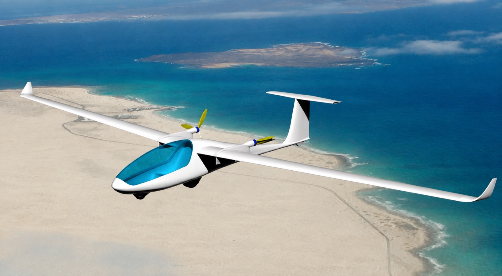
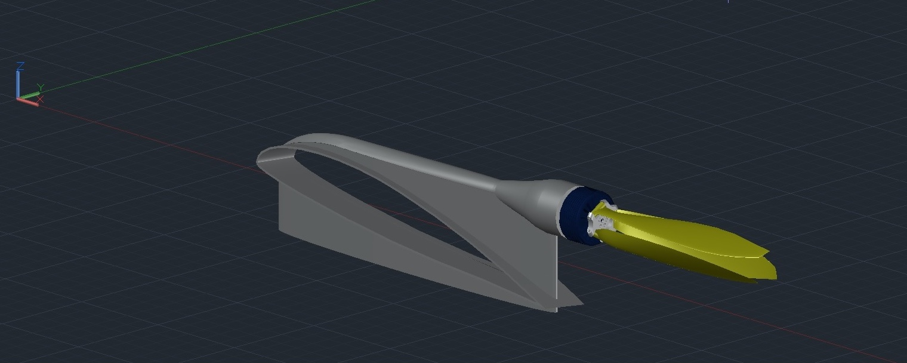

Eine modulare, leichte Motorgondel, die ein serienmäßiges Segelflugzeug bei Bedarf mit einem elektrischen Antrieb ausrüstet – und sich rückstandslos wieder abnehmen lässt, ohne die Primärstruktur des Flugzeugs zu verändern.
Abnehmbare elektrische Antriebseinheit
für Standardsegelflugzeuge

Standardsegelflugzeug mit montierten Antriebsmodulen
Projektkonzept
Das Projekt umfasst die Entwicklung einer modularen, leichten und abnehmbaren elektrischen Antriebseinheit für Seriensegelflugzeuge, die ohne wesentliche konstruktive Veränderungen am bestehenden Flugzeug installiert werden kann.
Das Grundprinzip besteht darin, ein Standardsegelflugzeug bei Bedarf mit einer speziell für den jeweiligen Flugzeugtyp entwickelten abnehmbaren Motorgondel auszurüsten. In dieser Gondel sind sämtliche wesentlichen Komponenten des elektrischen Antriebssystems integriert:
- Traktionselektromotor;
- Akkumulator beziehungsweise Batteriepack;
- elektronischer Drehzahlsteller (ESC);
- Klappluftschraube;
- Motorträger und tragende Strukturelemente;
- elektrische Verkabelung und Schaltkomponenten;
- gegebenenfalls Kühlungs- und Schutzsysteme.
Nach der Montage ermöglicht die Motorgondel den eigenständigen motorisierten Flug beziehungsweise den Einsatz des Antriebs zur Unterstützung bei Start und Steigflug. Nach dem Abnehmen kann das Segelflugzeug wieder in seinen ursprünglichen Zustand versetzt werden.
Das Konzept beruht damit auf dem Prinzip eines austauschbaren Antriebsmoduls bei minimalem Eingriff in die Primärstruktur des Segelflugzeugs.
Typspezifische Anpassung
Die Motorgondel wird individuell für den jeweiligen Segelflugzeugtyp konstruiert. Bei der Auslegung werden insbesondere folgende Parameter berücksichtigt:
- Flügelgeometrie;
- Flügelprofil und Profildicke;
- Aufbau und Lage der tragenden Strukturelemente;
- Position des Holmbereichs;
- lokale Belastbarkeit der Flügelstruktur;
- aerodynamische Randbedingungen;
- Schwerpunktlage;
- zulässige zusätzliche Lasten.
Die Befestigungs- und Auflageelemente werden so ausgelegt, dass möglichst vorhandene tragende Strukturen des Flugzeugs genutzt werden. Dadurch bleibt die erforderliche Modifikation des Segelflugzeugs minimal – der überwiegende konstruktive Aufwand liegt in der abnehmbaren Antriebseinheit selbst.
Konstruktion der Motorgondel

CAD-Modell: äußere Geometrie, Anbindung an den Flügel sowie Integration von Elektromotor und Luftschraube
Die Motorgondel ist als aerodynamisch optimierte Leichtbaukonstruktion ausgeführt. Ziel ist eine möglichst geringe Masse bei gleichzeitig ausreichender Steifigkeit, Festigkeit und Formstabilität. Als Werkstoff sind faserverstärkte Polymerverbundwerkstoffe vorgesehen, insbesondere glas- und kohlenstofffaserverstärkte Kunststoffe (GFK/CFK) mit Epoxidharzmatrix.
Der Rumpf der Gondel besteht aus zwei Schalen – einer oberen und einer unteren. Die Trennebene verläuft im Bereich der Hinterkante. Diese Teilung ermöglicht guten Zugang zu den innen angeordneten Komponenten und vereinfacht Fertigung, Montage, Wartung und Reparatur. Im Inneren sind unter anderem Akku, Elektromotor und Drehzahlsteller sowie die erforderlichen elektrischen und strukturellen Komponenten angeordnet.
Klappluftschraube
Zur Minimierung des aerodynamischen Widerstands im motorlosen Flug ist eine Klappluftschraube vorgesehen. Beim Anlaufen des Elektromotors schwenken die Blätter durch die entstehenden Fliehkräfte selbsttätig in die Arbeitsstellung. Bei stillstehendem Motor hält sie ein Federelement in der angelegten Position.
Ein separater Stellmechanismus zum Aus- und Einklappen entfällt dadurch vollständig. Im eingefalteten Zustand liegen die Blätter strömungsgünstig an der Motorgondel an, was Stirnfläche und parasitären Widerstand während des Segelflugs reduziert.
Ansteuerung des Antriebssystems
Die Steuerung des Elektromotors erfolgt aus dem Cockpit des Segelflugzeugs. Die Hochstrom- beziehungsweise Leistungselektrik bleibt dabei in jedem Fall vollständig innerhalb der abnehmbaren Motorgondel. Für die Signalübertragung stehen zwei Varianten zur Wahl:
Steuerkabel
Das Steuersignal wird über ein dünnes Kabel übertragen. Erforderlich wäre lediglich eine kleine Durchführung durch die Flügelbeplankung.
Drahtlose Ansteuerung
Die Steuerung erfolgt über ein Sender-Empfänger-System. Es besteht dann keinerlei mechanische oder elektrische Verbindung zwischen Cockpit und Motorgondel. Diese Variante ist hinsichtlich der Rückrüstbarkeit im Vorteil, da selbst die Kabeldurchführung in der Flügelbeplankung entfällt.
Modulares Systemkonzept
Ein wesentliches Merkmal des Projekts ist die funktionale Trennung zwischen Segelflugzeug und Antriebseinheit:
Basismodul
Serienmäßiges Segelflugzeug, dessen ursprüngliche Konstruktion weitgehend unverändert bleibt.
Antriebsmodul
Abnehmbare Motorgondel mit vollständig integrierter elektrischer Antriebseinheit.
Dadurch lässt sich dasselbe Grundkonzept auf unterschiedliche Segelflugzeugtypen übertragen. Anzupassen sind im Wesentlichen die äußere Geometrie der Gondel sowie ihre Befestigungs- und Anschlussstrukturen.
CAD-Konstruktion
Die Entwicklung erfolgt auf Basis eines dreidimensionalen parametrischen CAD-Modells. Ausgelegt werden darin unter anderem:
- aerodynamische Außenkontur der Motorgondel;
- Übergang zwischen Motorgondel und Flügel;
- Position und Befestigung des Elektromotors;
- Aufnahme der Luftschraube;
- Bauraum für den Akku;
- Einbauposition des Drehzahlstellers;
- tragende Strukturelemente;
- Teilung in obere und untere Schale;
- Befestigungs- und Wartungselemente.
Die parametrische Konstruktion ermöglicht eine vergleichsweise schnelle Anpassung der Gondel an unterschiedliche Segelflugzeugtypen.
Fertigungstechnologie
Die Herstellung ist als Faserverbund-Leichtbaukonstruktion vorgesehen. Je nach erforderlicher Festigkeit, Steifigkeit und Bauteilmasse kommen infrage:
Werkstoffe
- Glasfasergewebe und GFK;
- Kohlenfasergewebe und CFK;
- Hybridlaminate;
- Epoxidharzsysteme;
- Sandwichbauweise mit leichtem Kernmaterial.
Verfahren
- Vakuumlaminieren;
- Vakuuminfusion;
- Negativformen und Formenbau;
- 3D-gedruckte Urmodelle und Hilfsvorrichtungen.
Faserverbundwerkstoffe ermöglichen eine leichte, steife und aerodynamisch präzise Außenhaut mit komplexer Geometrie. Diese Verfahren sind an konkreten Bauteilen in der Umsetzung des Tandem-Ekranoplans dokumentiert.
Technische Entwicklungsaufgaben
Die wesentliche Aufgabe des Projekts besteht nicht in der Entwicklung eines vollständig neuen Motorseglers, sondern in der Entwicklung eines abnehmbaren elektrischen Antriebsmoduls, mit dem sich ein serienmäßiges Segelflugzeug bei Bedarf zusätzlich motorisieren lässt, ohne seine Primärstruktur wesentlich zu verändern.
Das Projekt verbindet dabei mehrere Fachgebiete:
- Aerodynamik
- CAD-Konstruktion
- Strukturauslegung
- Faserverbundtechnik
- elektrische Antriebstechnik
- Klappluftschraube
- modulare Befestigung
- Cockpitsteuerung
- Prototypenbau
Bei der weiteren Entwicklung sind insbesondere zu untersuchen: die Lasten aus Schub, Drehmoment und Vibrationen, die Krafteinleitung in die tragende Flugzeugstruktur, die Schwerpunktlage, die Kühlung von Akku und Leistungselektronik, der Brandschutz, die sichere Verriegelung der abnehmbaren Motorgondel sowie die Ausfallsicherheit der Steuerung.
Das Projekt stellt damit ein modulares elektrisches Zusatzantriebssystem für Segelflugzeuge dar, bei dem die komplette Antriebseinheit in einer typspezifisch ausgelegten, abnehmbaren Faserverbund-Motorgondel integriert ist.